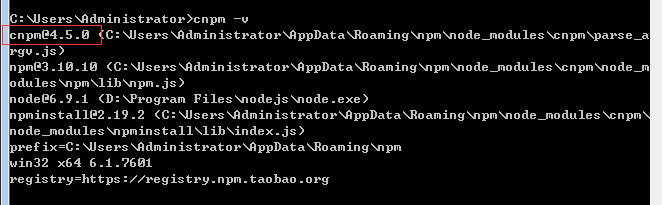
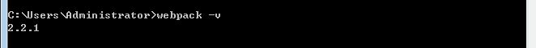
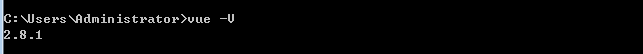
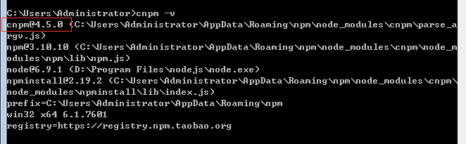
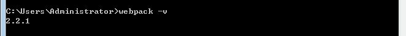
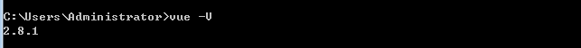
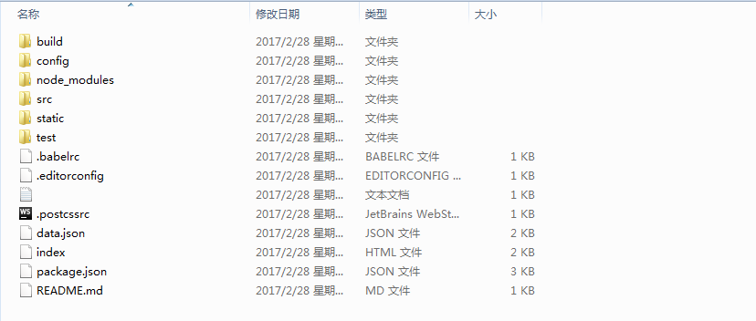
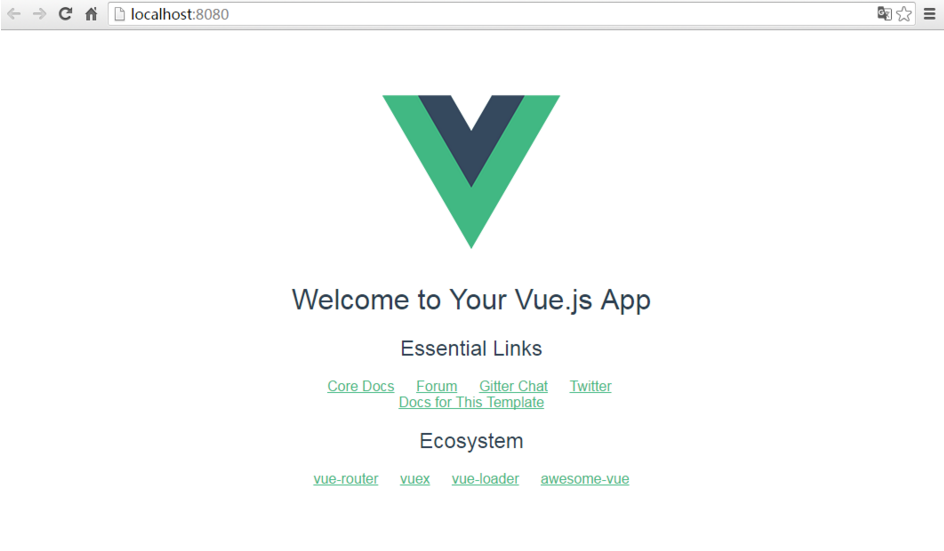
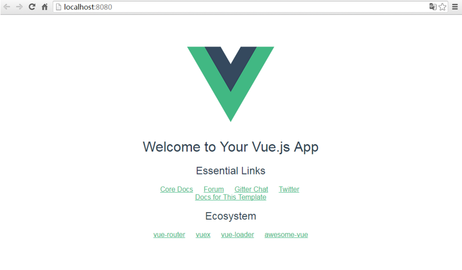

VUE 知识点总结
参考web技术文档之VUEJS资料
1 使用教程
1.1 兼容性
Vue.js 不支持 IE8 及其以下版本，因为 Vue.js 使用了 IE8 不能模拟的 ECMAScript 5 特性。 Vue.js 支持所有兼容 ECMAScript 5 的浏览器。
1.2 Vue 双向数据绑定原理分析
1.2.1 关于双向数据绑定
当我们在前端开发中采用MV*的模式时，M - model，指的是模型，也就是数据，V - view，指的是视图，也就是页面展现的部分。通常，我们需要编写代码，将从服务器获取的数据进行“渲染”，展现到视图上。每当数据有变更时，我们会再次进行渲染，从而更新视图，使得视图与数据保持一致。也就是：
而另一方面，页面也会通过用户的交互，产生状态、数据的变化，这个时候，我们则编写代码，将视图对数据的更新同步到数据，以致于同步到后台服务器。也就是：
 不同的前端 MV* 框架对于这种 Model 和 View 间的数据同步有不同的处理。在 Backbone 中，Model 到 View 的数据传递，可以在 View 中监听 Model 的 change 事件，每当 Model 更新，View 中重新执行 render。而 View 到 Model 的数据传递，可以监听 View 对应的 DOM 元素的各种事件，在检测到 View 状态变更后，将变更的数据发送到 Model。相较于 Backbone，AngularJS 所代表的 MVVM 框架则更进一步，从框架层面支持这种数据同步机制，而且是双向数据绑定：
不过在不同的 MVVM 框架中，实现双向数据绑定的技术有所不同。
AngularJS 采用“脏值检测”的方式，数据发生变更后，对于所有的数据和视图的绑定关系进行一次检测，识别是否有数据发生了改变，有变化进行处理，可能进一步引发其他数据的改变，所以这个过程可能会循环几次，一直到不再有数据变化发生后，将变更的数据发送到视图，更新页面展现。如果是手动对 ViewModel 的数据进行变更，为确保变更同步到视图，需要手动触发一次“脏值检测”。
VueJS 则使用 ES5 提供的 Object.defineProperty() 方法，监控对数据的操作，从而可以自动触发数据同步。并且，由于是在不同的数据上触发同步，可以精确的将变更发送给绑定的视图，而不是对所有的数据都执行一次检测。
不同的前端 MV* 框架对于这种 Model 和 View 间的数据同步有不同的处理。在 Backbone 中，Model 到 View 的数据传递，可以在 View 中监听 Model 的 change 事件，每当 Model 更新，View 中重新执行 render。而 View 到 Model 的数据传递，可以监听 View 对应的 DOM 元素的各种事件，在检测到 View 状态变更后，将变更的数据发送到 Model。相较于 Backbone，AngularJS 所代表的 MVVM 框架则更进一步，从框架层面支持这种数据同步机制，而且是双向数据绑定：
不过在不同的 MVVM 框架中，实现双向数据绑定的技术有所不同。
AngularJS 采用“脏值检测”的方式，数据发生变更后，对于所有的数据和视图的绑定关系进行一次检测，识别是否有数据发生了改变，有变化进行处理，可能进一步引发其他数据的改变，所以这个过程可能会循环几次，一直到不再有数据变化发生后，将变更的数据发送到视图，更新页面展现。如果是手动对 ViewModel 的数据进行变更，为确保变更同步到视图，需要手动触发一次“脏值检测”。
VueJS 则使用 ES5 提供的 Object.defineProperty() 方法，监控对数据的操作，从而可以自动触发数据同步。并且，由于是在不同的数据上触发同步，可以精确的将变更发送给绑定的视图，而不是对所有的数据都执行一次检测。
1.2.2 Vue 双向数据绑定实现
数据与视图的绑定与同步，最终体现在对数据的读写处理过程中，也就是 Object.defineProperty() 定义的数据 set、get 函数中。Vue 中对于的函数为 defineReactive，在精简版实现中，我只保留了一些基本特性：
function defineReactive(obj, key, value) {
var dep = new Dep()
Object.defineProperty(obj, key, {
enumerable: true,
configurable: true,
get: function reactiveGetter() {
if (Dep.target) {
dep.depend()
}
return value
},
set: function reactiveSetter(newVal) {
if (value === newVal) {
return
} else {
value = newVal
dep.notify()
}
}
})
}
在对数据进行读取时，如果当前有 Watcher（对数据的观察者吧，watcher 会负责将获取的新数据发送给视图），那将该 Watcher 绑定到当前的数据上（dep.depend()，dep 关联当前数据和所有的 watcher 的依赖关系），是一个检查并记录依赖的过程。而在对数据进行赋值时，如果数据发生改变，则通知所有的 watcher（借助 dep.notify()）。这样，即便是我们手动改变了数据，框架也能够自动将数据同步到视图。
1.2.3 数据绑定关系的识别过程
Vue 和 AngularJS 中，都是通过在 HTML 中添加指令的方式，将视图元素与数据的绑定关系进行声明。例如：
<form id="test"> <input type="text" v-model="name"> </form>以上的 HTML 代码表示该 input 元素与 name 数据进行绑定。在 JS 代码中可以这样进行初始化：
var vm = new Vue({
el: '#test',
data: {
name: 'luobo'
}
})
代码正确执行后，页面上 input 元素对应的位置会显示上面代码中给出的初始值：luobo。
那么初始化的过程中，Vue 是如何识别出这种绑定关系的呢？
通过分析源码，在初始化过程中（new Vue() 执行时），主要执行两个步骤：
(1) compile 过程中，对于给定的目标元素进行解析，识别出所有绑定在元素（通过 el 属性传入）上的指令。
(2) link 过程中，建立这些指令与对应数据（通过 data 属性传入初始值）的绑定关系，并以数据的初始值进行渲染。绑定关系建立后，就可以双向同步数据了。
1.3 搭建Vue脚手架（vue-cli）
1.3.1 那么我们就从最简单的环境搭建开始：
(1) 安装node.js，从node.js官网下载并安装node，安装过程很简单，一路“下一步”就可以了（傻瓜式安装）。安装完成之后，打开命令行工具(win+r，然后输入cmd)，输入 node -v，如下图，如果出现相应的版本号，则说明安装成功
 这里需要说明下，因为在官网下载安装node.js后，就已经自带npm（包管理工具）了，另需要注意的是npm的版本最好是3.x.x以上，以免对后续产生影响。
(2) 安装淘宝镜像，打开命令行工具，把这个（npm install -g cnpm --registry= http://registry.npm.taobao.org）复制（这里要手动复制就是用鼠标右键那个，具体为啥不多解释），安装这里是因为我们用的npm的服务器是外国，有的时候我们安装“依赖”的时候很很慢很慢超级慢，所以就用这个cnpm来安装我们说需要的“依赖”。安装完成之后输入 cnpm -v，如下图，如果出现相应的版本号，则说明安装成功。

(3) 安装webpack，打开命令行工具输入：npm install webpack -g，安装完成之后输入 webpack -v，如下图，如果出现相应的版本号，则说明安装成功。

(4) 安装vue-cli脚手架构建工具，打开命令行工具输入：npm install vue-cli -g，安装完成之后输入 vue -V（注意这里是大写的“V”），如下图，如果出现相应的版本号，则说明安装成功。

这里需要说明下，因为在官网下载安装node.js后，就已经自带npm（包管理工具）了，另需要注意的是npm的版本最好是3.x.x以上，以免对后续产生影响。
(2) 安装淘宝镜像，打开命令行工具，把这个（npm install -g cnpm --registry= http://registry.npm.taobao.org）复制（这里要手动复制就是用鼠标右键那个，具体为啥不多解释），安装这里是因为我们用的npm的服务器是外国，有的时候我们安装“依赖”的时候很很慢很慢超级慢，所以就用这个cnpm来安装我们说需要的“依赖”。安装完成之后输入 cnpm -v，如下图，如果出现相应的版本号，则说明安装成功。

(3) 安装webpack，打开命令行工具输入：npm install webpack -g，安装完成之后输入 webpack -v，如下图，如果出现相应的版本号，则说明安装成功。

(4) 安装vue-cli脚手架构建工具，打开命令行工具输入：npm install vue-cli -g，安装完成之后输入 vue -V（注意这里是大写的“V”），如下图，如果出现相应的版本号，则说明安装成功。

1.3.2 使用vue-cli来构建项目
(1) 在硬盘上找一个文件夹放工程用的。这里有两种方式指定到相关目录：①cd 目录路径 ②如果以安装git的，在相关目录右键选择Git Bash Here (2) 安装vue脚手架输入：vue init webpack exprice ，注意这里的“exprice” 是项目的名称可以说是随便的起名，但是需要主要的是“不能用中文”。
$ vue init webpack exprice --------------------- 这个是那个安装vue脚手架的命令 This will install Vue 2.x version of the template. ---------------------这里说明将要创建一个vue 2.x版本的项目 For Vue 1.x use: vue init webpack#1.0 exprice ? Project name (exprice) ---------------------项目名称 ? Project name exprice ? Project description (A Vue.js project) ---------------------项目描述 ? Project description A Vue.js project ? Author Datura --------------------- 项目创建者 ? Author Datura ? Vue build (Use arrow keys) ? Vue build standalone ? Install vue-router? (Y/n) --------------------- 是否安装Vue路由，也就是以后是spa（但页面应用需要的模块） ? Install vue-router? Yes ? Use ESLint to lint your code? (Y/n) n ---------------------是否启用eslint检测规则，这里个人建议选no ? Use ESLint to lint your code? No ? Setup unit tests with Karma + Mocha? (Y/n) ? Setup unit tests with Karma + Mocha? Yes ? Setup e2e tests with Nightwatch? (Y/n) ? Setup e2e tests with Nightwatch? Yes vue-cli · Generated "exprice". To get started: --------------------- 这里说明如何启动这个服务 cd exprice npm install npm run dev 如下图：(3) cd 命令进入创建的工程目录，首先cd exprice（这里是自己建工程的名字）； (4) 安装项目依赖：npm install，因为自动构建过程中已存在package.json文件，所以这里直接安装依赖就行。不要从国内镜像cnpm安装(会导致后面缺了很多依赖库)，但是但是如果真的安装“个把”小时也没成功那就用：cnpm install 吧 (5) 安装 vue 路由模块 vue-router 和网络请求模块 vue-resource，输入：cnpm install vue-router vue-resource --save。 创建完成的“exprice”目录如下： 
 (6) 启动项目，输入：npm run dev。服务启动成功后浏览器会默认打开一个“欢迎页面”，如下图：

注意：这里是默认服务启动的是本地的8080端口，所以请确保你的8080端口不被别的程序所占用。
(6) 启动项目，输入：npm run dev。服务启动成功后浏览器会默认打开一个“欢迎页面”，如下图：

注意：这里是默认服务启动的是本地的8080端口，所以请确保你的8080端口不被别的程序所占用。
2 常见的VUE快速开发的工具
2.1 UI组件
element ★ 9305 -饿了么出品的Vue2的web UI工具套件 Vux ★ 6802 -基于Vue和WeUI的组件库 mint-ui ★ 4776 - Vue 2的移动UI元素 iview ★ 4458 -基于Vuejs的开源UI组件库 Keen-UI ★ 2363 -轻量级的基本UI组件合集 vue-material ★ 2207 -通过Vue Material和Vue 2建立精美的app应用 muse-ui ★ 1992 -三端样式一致的响应式UI库 vuetify ★ 1678 -为移动而生的Vue JS 2组件框架 vonic ★ 1494 -快速构建移动端单页应用 eme ★ 1390 -优雅的Markdown编辑器 vue-multiselect ★ 1166 - Vue.js选择框解决方案 vue-table ★ 824 -简化数据表格 VueCircleMenu ★ 776 -漂亮的vue圆环菜单 vue-chat ★ 748 - vuejs和vuex及webpack的聊天示例 radon-ui ★ 633 -快速开发产品的Vue组件库 vue-waterfall ★ 605 - Vue.js的瀑布布局组件 vue-carbon ★ 595 -基于vue开发MD风格的移动端 vue-beauty ★ 569 -由vue和ant design创建的优美UI组件 vue-blu ★ 557 -帮助你轻松创建web应用 vueAdmin ★ 556 -基于vuejs2和element的简单的管理员模板 vue-syntax-highlight ★ 551 - Sublime Text语法高亮 vue-infinite-scroll ★ 524 - VueJS的无限滚动指令 Vue.Draggable ★ 493 -实现拖放和视图模型数组同步 vue-awesome-swiper ★ 476 - vue.js触摸滑动组件 vue-calendar ★ 465 -日期选择插件 bootstrap-vue ★ 458 -应用于Vuejs2的Twitter的Bootstrap 4组件 vue-swipe ★ 361 - VueJS触摸滑块 vue-amap ★ 346 -基于Vue 2和高德地图的地图组件 vue-chartjs ★ 333 - vue中的Chartjs的封装 vue-datepicker ★ 331 -日历和日期选择组件 markcook ★ 318 -好看的markdown编辑器 vue-google-maps ★ 287 -带有双向数据绑定Google地图组件 vue-progressbar ★ 248 - vue轻量级进度条 vue-picture-input ★ 236 -移动友好的图片文件输入组件 vue-infinite-loading ★ 224 - VueJS的无限滚动插件 vue-upload-component ★ 204 - Vuejs文件上传组件 vue-datetime-picker ★ 197 -日期时间选择控件 vue-scroller ★ 196 - Vonic UI的功能性组件 vue2-calendar ★ 181 -支持lunar和日期事件的日期选择器 vue-video-player ★ 178 - VueJS视频及直播播放器 vue-fullcalendar ★ 176 -基于vue.js的全日历组件 rubik ★ 170 -基于Vuejs2的开源UI组件库 VueStar ★ 169 -带星星动画的vue点赞按钮 vue-mugen-scroll ★ 167 -无限滚动组件 mint-loadmore ★ 167 - VueJS的双向下拉刷新组件 vue-tables-2 ★ 162 -显示数据的bootstrap样式网格 vue-virtual-scroller ★ 158 -带任意数目数据的顺畅的滚动 DataVisualization ★ 149 -数据可视化 vue-quill-editor ★ 149 -基于Quill适用于Vue2的富文本编辑器 Vueditor ★ 138 -所见即所得的编辑器 vue-html5-editor ★ 132 - html5所见即所得编辑器 vue-msgbox ★ 127 - vuejs的消息框 vue-slider ★ 126 - vue滑动组件 vue-core-image-upload ★ 124 -轻量级的vue上传插件 vue-slide ★ 121 - vue轻量级滑动组件 vue-lazyload-img ★ 118 -移动优化的vue图片懒加载插件 vue-drag-and-drop-list ★ 114 -创建排序列表的Vue指令 vue-progressive-image ★ 107 - Vue的渐进图像加载插件 vuwe ★ 107 -基于微信WeUI所开发的专用于Vue2的组件库 vue-dropzone ★ 105 -用于文件上传的Vue组件 vue-charts ★ 101 -轻松渲染一个图表 vue-swiper ★ 95 -易于使用的滑块组件 vue-images ★ 93 -显示一组图片的lightbox组件 vue-carousel-3d ★ 91 - VueJS的3D轮播组件 vue-region-picker ★ 89 -选择中国的省份市和地区 vue-typer ★ 89 -模拟用户输入选择和删除文本的Vue组件 vue-impression ★ 88 -移动Vuejs2 UI元素 vue-datatable ★ 87 -使用Vuejs创建的DataTableView vue-instant ★ 86 -轻松创建自动提示的自定义搜索控件 vue-dragging ★ 86 -使元素可以拖拽 vue-slider-component ★ 85 -在vue1和vue2中使用滑块 vue2-loading-bar ★ 76 -最简单的仿Youtube加载条视图 vue-datepicker ★ 75 -漂亮的Vue日期选择器组件 vue-video ★ 70 - Vue.js的HTML5视频播放器 vue-toast-mobile ★ 68 - VueJS的toast插件 vue-image-crop-upload ★ 67 - vue图片剪裁上传组件 vue-tooltip ★ 66 -带绑定信息提示的提示工具 vue-highcharts ★ 66 - HighCharts组件 vue-touch-ripple ★ 62 - vuejs的触摸ripple组件 coffeebreak ★ 61 -实时编辑CSS组件工具 vue-datasource ★ 60 -创建VueJS动态表格 vue2-timepicker ★ 60 -下拉时间选择器 vue-date-picker ★ 59 - VueJS日期选择器组件 vue-scrollbar ★ 58 -最简单的滚动区域组件 vue-quill ★ 56 - vue组件构建quill编辑器 vue-google-signin-button ★ 55 -导入谷歌登录按钮 vue-svgicon ★ 53 -创建svg图标组件的工具 vue-float-label ★ 49 - VueJS浮动标签模式 vue-baidu-map ★ 46 -基于Vue 2的百度地图组件库 vue-social-sharing ★ 45 -社交分享组件 vue2-editor ★ 44 - HTML编辑器 vue-tagsinput ★ 41 -基于VueJS的标签组件 vue-easy-slider ★ 41 - Vue 2.x的滑块组件 datepicker ★ 38 -基于flatpickr的时间选择组件 vue-chart ★ 37 -强大的高速的vue图表解析 vue-music-master ★ 37 - vue手机端网页音乐播放器 handsontable ★ 35 -网页表格组件 vue-simplemde ★ 35 - VueJS的Markdown编辑器组件 vue-popup-mixin ★ 35 -用于管理弹出框的遮盖层 cubeex ★ 33 -包含一套完整的移动UI vue-fullcalendar ★ 32 - vue FullCalendar封装 vue-material-design ★ 32 - Vue MD风格组件 vue-morris ★ 31 - Vuejs组件封装Morrisjs库 we-vue ★ 30 - Vue2及weui1开发的组件 vue-image-clip ★ 29 -基于vue的图像剪辑组件 vue-bootstrap-table ★ 29 -可排序可检索的表格 vue-radial-progress ★ 28 - Vue.js放射性进度条组件 vue-slick ★ 28 -实现流畅轮播框的vue组件 vue-pull-to-refresh ★ 27 - Vue2的上拉下拉 vue-form-2 ★ 26 -全面的HTML表单管理的解决方案 vue-side-nav ★ 26 -响应式的侧边导航 mint-indicator ★ 26 - VueJS移动加载指示器插件 chartjs ★ 24 - Vue Bulma的chartjs组件 vue-scroll ★ 24 - vue滚动 vue-ripple ★ 24 -制作谷歌MD风格涟漪效果的Vue组件 vue-touch-keyboard ★ 22 - VueJS虚拟键盘组件 vue-chartkick ★ 22 - VueJS一行代码实现优美图表 vue-ztree ★ 21 -用vue写的树层级组件 vue-m-carousel ★ 20 - vue移动端轮播组件 vue-datepicker-simple ★ 20 -基于vue的日期选择器 vue-tabs ★ 20 -多tab页轻型框架 vue-verify-pop ★ 19 -带气泡提示的vue校验插件 vue-parallax ★ 15 -整洁的视觉效果 vue-img-loader ★ 14 -图片加载UI组件 vue-typewriter ★ 13 - vue组件类型 vue-smoothscroll ★ 12 - smoothscroll的VueJS版本 vue-city ★ 10 -城市选择器 vue-tree ★ 10 - vue树视图组件 vue-ios-alertview ★ 8 - iOS7+风格的alertview服务 dd-vue-component ★ 7 -订单来了的公共组件库 paco-ui-vue ★ 7 - PACOUI的vue组件 vue-cmap ★ 5 - Vue China map可视化组件 vue-button ★ 4 - Vue按钮组件
2.2 开发框架
vue.js★45466 -流行的轻量高效的前端组件化方案 vue-admin★3222 - Vue管理面板框架 electron-vue★1273 - Electron及VueJS快速启动样板 vue-2.0-boilerplate★241 - Vue2单页应用样板 vue-spa-template★223 -前后端分离后的单页应用开发 Framework7-Vue★210 - VueJS与Framework7结合 vue-bulma★132 -轻量级高性能MVVM Admin UI框架 vue-webgulp★100 -仿VueJS Vue loader示例 vue-element-starter★34 - vue启动页
2.3 实用库
vuex★5997 -专为Vue.js应用程序开发的状态管理模式 vuelidate★750 -简单轻量级的基于模块的Vue.js验证 qingcheng★677 - qingcheng主题 vue-desktop★461 -创建管理面板网站的UI库 vue-meta★257 -管理app的meta信息 vue-axios★209 -将axios整合到VueJS的封装 vue-svg-icon★116 - vue2的可变彩色svg图标方案 avoriaz★110 - VueJS测试实用工具库 vue-framework7★83 -结合VueJS使用的Framework7组件 vue-bootstrap-modal★78 - vue的Bootstrap样式组件 vuep★72 -用实时编辑和预览来渲染Vue组件 vue-online★67 - reactive的在线和离线组件 vue-lazy-render★66 -用于Vue组件的延迟渲染 vue-password-strength-meter★65 -交互式密码强度计 element-admin★57 -支持vuecli的Element UI的后台模板 vue-electron★55 -将选择的API封装到Vue对象中的插件 cleave★55 -基于cleave.js的Cleave组件 vue-events★54 -简化事件的VueJS插件 vue-shortkey★53 -应用于Vue.js的Vue-ShortKey插件 vue-cordova★50 - Cordova的VueJS插件 vue-router-transition★49 -页面过渡插件 vue-gesture★48 - VueJS的手势事件插件 http-vue-loader★46 -从html及js环境加载vue文件 vue-qart★46 -用于qartjs的Vue2指令 vuemit★44 -处理VueJS事件 vue-websocket★42 - VueJS的Websocket插件 vue-local-storage★41 -具有类型支持的Vuejs本地储存插件 lazy-vue★41 -懒加载图片 vue-bus★36 - VueJS的事件总线 vue-reactive-storage★35 - vue插件的Reactive层 vue-notifications★32 -非阻塞通知库 vue-lazy-component★32 -懒加载组件或者元素的Vue指令 v-media-query★32 - vue中添加用于配合媒体查询的方法 vue-observe-visibility★31 -当元素在页面上可见或隐藏时检测 vue-ts-loader★29 -在Vue装载机检查脚本 vue-pagination-2★28 -简单通用的分页组件 vuex-i18n★26 -定位插件 Vue.resize★26 -检测HTML调整大小事件的vue指令 vuex-shared-mutations★25 -分享某种Vuex mutations vue-file-base64★16 -将文件转换为Base64的vue组件 modal★15 - Vue Bulma的modal组件 Famous-Vue★15 - Famous库的vue组件 leo-vue-validator★13 -异步的表单验证组件 Vue-Easy-Validator★11 -简单的表单验证 vue-truncate-filter★9 -截断字符串的VueJS过滤器 vue-zoombox★9 -一个高级zoombox vue-input-autosize★5 -基于内容自动调整文本输入的大小 vue-lazyloadImg★3 -图片懒加载插件
2.4 应用实例
koel★7175 -基于网络的个人音频流媒体服务 pagekit★4021 -轻量级的CMS建站系统 vuedo★1040 -博客平台 jackblog-vue★943 -个人博客系统 vue-cnode★597 -重写vue版cnode社区 CMS-of-Blog★405 -博客内容管理器 rss-reader★326 -简单的rss阅读器 vue-ghpages-blog★208 -依赖GitHub Pages无需本地生成的静态博客 swoole-vue-webim★97 - Web版的聊天应用 vue-dashing-js★70 - nuvo-dashing-js的fork fewords★52 -功能极其简单的笔记本 vue-blog★33 -使用Vue2.0和Vuex的vue-blog
2.5 Demo示例
Vue-cnodejs★2113 -基于vue重写Cnodejs.org的webapp NeteaseCloudWebApp★1154 -高仿网易云音乐的webapp vue-zhihu-daily★875 -知乎日报with Vuejs vue-wechat★732 - vue.js开发微信app界面 vue2-demo★699 -从零构建vue2 + vue-router + vuex开发环境 eleme★612 -高仿饿了么app商家详情 vue-demo★575 - vue简易留言板 maizuo★498 - vue/vuex/redux仿卖座网 spa-starter-kit★489 -单页应用启动套件 vue-music★485 - Vue音乐搜索播放 douban★402 -模仿豆瓣前端 vue-Meizi★394 - vue最新实战项目 zhihudaily-vue★386 -知乎日报web版 vue-demo-kugou★310 - vuejs仿写酷狗音乐webapp VueDemo_Sell_Eleme★307 - Vue2高仿饿了么外卖平台 vue2.0-taopiaopiao★246 - vue2.0与express构建淘票票页面 vue-leancloud-blog★239 -一个前后端完全分离的单页应用 node-vue-server-webpack★239 - Node.js+Vue.js+webpack快速开发框架 mi-by-vue★222 - VueJS仿小米官网 vue-fis3★199 -流行开源工具集成demo vue2.x-douban★188 - Vue2实现简易豆瓣电影webApp vue-demo-maizuo★188 -使用Vue2全家桶仿制卖座电影 vue-zhihudaily★169 -知乎日报Web版本 vue-adminLte-vue-router★162 - vue和adminLte整合应用 vue-axios-github★157 -登录拦截登出功能 Zhihu-Daily-Vue.js★134 - Vuejs单页网页应用 hello-vue-django★113 -使用带有Django的vuejs的样板项目 vue-cnode★101 - vue单页应用demo x-blog★100 -开源的个人blog项目 vue-express-mongodb★96 -简单的前后端分离案例 websocket_chat★91 -基于vue和websocket的多人在线聊天室 photoShare★85 -基于图片分享的社交平台 vue-zhihudaily-2.0★81 -使用Vue2.0+vue-router+vuex创建的zhihudaily notepad★77 -本地存储的记事本 vueBlog★75 -前后端分离博客 vue-ruby-china★70 - VueJS框架搭建的rubychina平台 Zhihu_Daily★70 -基于Vue和Nodejs的Web单页应用 vue-koa-demo★60 -使用Vue2和Koa1的全栈demo vue2.x-Cnode★50 -基于vue全家桶的Cnode社区 life-app-vue★49 -使用vue2完成多功能集合到小webapp github-explorer★49 -寻找最有趣的GitHub库 vue-trip★48 - vue2做的出行webapp vue-ssr-boilerplate★47 -精简版的ofvue-hackernews-2 vue-bushishiren★45 -不是诗人应用 houtai★44 -基于vue和Element的后台管理系统 ios7-vue★38 -使用vue2.0 vue-router vuex模拟ios7 Framework7-VueJS★38 -使用移动框架的示例 cnode-vue★37 -基于vue和vue-router构建的cnodejs web网站SPA vue-cli-multipage-bootstrap★36 -将vue官方在线示例整合到组件中 vue-cnode★34 -用Vue做的CNode官网 HyaReader★30 -移动友好的阅读器 zhihu-daily★28 -轻松查看知乎日报内容 seeMusic★27 -跨平台云音乐播放器 vue-cnode★22 -使用cNode社区提供的接口 zhihu-daily-vue★20 -知乎日报 sls-vuex2-demo★20 - vuex2商城购物车demo vue-dropload★17 -用以测试下拉加载与简单路由 vue-cnode-mobile★17 -搭建cnode社区 Vuejs-SalePlatform★17 - vuejs搭建的售卖平台demo v-notes★17 -简单美观的记事本 vue-starter★16 - VueJs项目的简单启动页 vue-memo★7 -用vue写的记事本应用